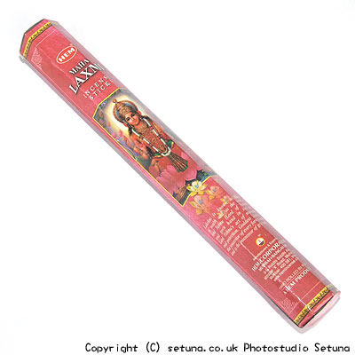

火を点けずに嗅いでみると割といい感じの男性用(?)の香水のような香りがします。
火を点けると生の茶葉を煎ったときや、生乾きの杉葉を焼いたときのような青っぽい匂いが広がります。
生薬や漢方薬の匂いのようでもあります。
系統で云うとグリーンノート系。
アンバーやバイオレット、グリーンアップルなどのちょっとクセのある香りも一緒にします。
子供の頃に、焚火をして失敗した事を思い出す匂いとでも言いましょうか・・・
これ単品で焚くと、買ってしまった自分を責めたくなるような(涙)匂いです。
香りの広がり方は、部屋全体に広がるというタイプではなく、お香の近くを漂うという感じですね。
焚き終わりは焚火が終わった後のような感じの匂いが残り、女神がいた気配だけを残す様にうっすら草の香りだけが漂いながら薄れてゆきます。
このお香はともに焚く香によってずいぶん変化するお香なので扱いが難しい香と云えるでしょう。
まるで女神ラクシュミが、私を上手に捕まえてごらん！とでも言いたげに、その羽衣を振ってこちらに微笑みかけている気すらするのです。
